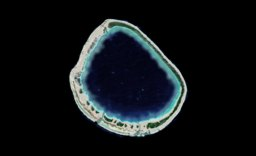
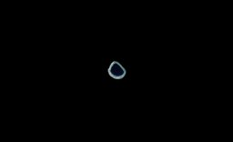

French Polynesia Tuamotu Archipelago FS9/FSX Addon Scenery
Group E
Ahunui

Ahunui is located in southernmost of the Tuamotu Scenery that I designed.
A small roughly circular-shaped atoll is located 56 km to the south-southeast of Paraoa.
The atoll encloses the lagoon except two passages connecting with the open sea.
The both of passages are located in the south of the atolls.

Size of Ahunui based on Rangiroa

The south side of the coral ring